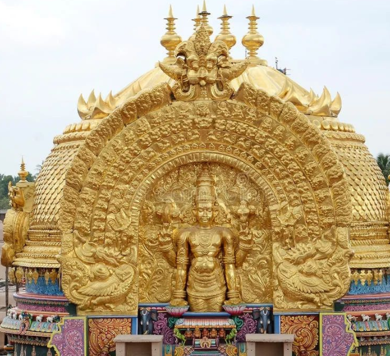

Back to home

PraNavakara VimAnam, Srirangam
SriRangam Ranganathaswamy Temple, Srirangam
Thirukoshtioor Sowmya Narayana Perumal, Sivagangai
Vaduvur Kothandaswamy Kovil, Vaduvur
Neelamega Perumal, Karanthai, Thanjavur
Manikundra Perumal, Karanthai, Thanjavur
Vennatrankarai Narasimha Perumal, Karanthai, Thanjavur
Navaneetha Krishnan Kovil, Thanjavur
ChakrathAzhwar Temple, Thanjavur
Prasanna Venkatesa Perumal Temple, Naalukaal Mandapam, Thanjavur
Naalukaal Mandapam Ranganathar Temple, Thanjavur
Kaliyuga Venkatesa Perumal, Thanjavur
Sri Varadaraja Perumal, Thanjavur
Shiva-Visnu kovil, Thanjavur
Thanjai Ramar Temple, Thanjavur
Hara Saaba Vimoshana Perumal, Kandiyur, Thanjavur
Srinivasa Perumal Kovil, Manambuchavaadi, Thanjavur
Srinivasa Perumal Temple, Kalyanapuram, Tiruvaiyaru, Thanjavur
Special thanks to Srinath anna for taking me along with him in his bike for all
the temples in Thanjavur